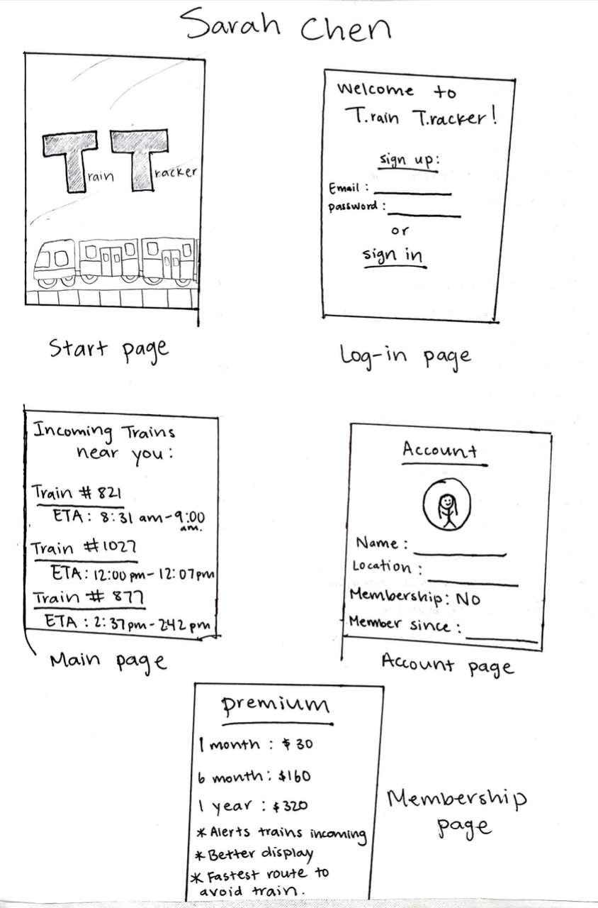

Problem Statement: Train Tracker
Users are unhappy because waiting for a train to pass causes them to be late. Our solution should provide users ways to not be occupied by the train.
Affinity Diagram: Train Tracker
Our group worked together to come up with ideas for our probject "Train Tracker".
Personna: 3 personnas for Train Tracker App
Personnas of typical train tracker app users.
Storyboard: Train Tracker
Storyboards of potenial users of the app "Train Tracker".
Sketches: Train Tracker
Sketches of potenial application of the app "Train Tracker".
Paper Prototype: Train Tracker

A paper walk through of the potential look of every screen of the app.
Paper Prototype: Train Tracker

The scenarios, tasks, and outcomes of usability test.